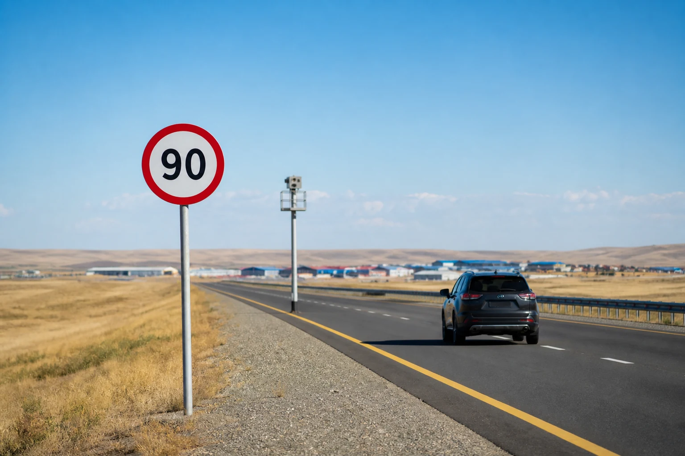
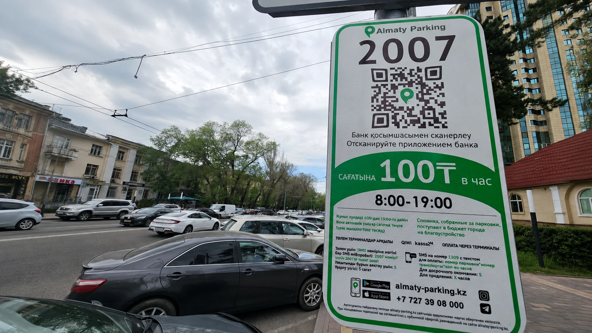
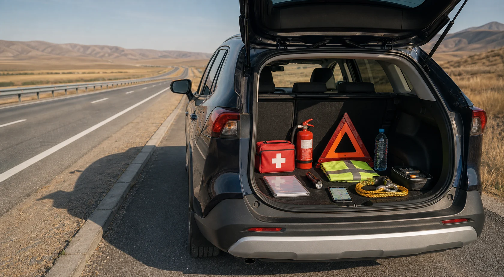

Как Казахстан может стать опорной территорией автомобильного Шёлкового пути
Проектный обзор IFA о потенциальной роли Казахстана в развитии автомобильной программы Шёлкового пути.
Открыть материал →Полезное
Проектный обзор IFA о потенциальной роли Казахстана в развитии автомобильной программы Шёлкового пути.
Открыть материал →
Методология IFA для оценки готовности международного автомобильного маршрута.
Открыть материал →
Практический материал IFA о МВУ, документах, подготовке и ответственности международного автопутешественника.
Открыть материал →Какие нарушения распознают интеллектуальные камеры, какие требования действуют для водителя и как рассчитываются штрафы в 2026 году.
Открыть материал →Принцип расчёта, перечень новых направлений и ответственность за превышение установленного ограничения.
Открыть материал →
Порог привлечения к ответственности, категории превышения и размеры штрафов в МРП и тенге.
Открыть материал →
Как определить муниципальную парковочную зону, проверить тариф и провести оплату через официальные каналы.
Открыть материал →
Что подготовить до поездки, как действовать при остановке полицией и какие правила соблюдать на дороге и природных территориях.
Открыть памятку →Resources
An IFA project review of Kazakhstan’s potential role in developing a Silk Road motor-travel programme.
Open article →IFA methodology for assessing the practical readiness of an international motor route.
Open article →IFA guidance on IDPs, documents, preparation and the responsibilities of an international motor traveller.
Open article →What intelligent cameras detect, the duties imposed on drivers and the fines applicable in 2026.
Open article →How the calculation works, which new corridors are covered and how speeding liability applies.
Open article →The legal threshold, fine bands and the applicable values in MCI and tenge.
Open article →How to identify a municipal zone, verify the tariff and pay through official channels.
Open article →What to prepare before departure, how to act during a police stop and which rules apply on roads and in natural areas.
Open checklist →